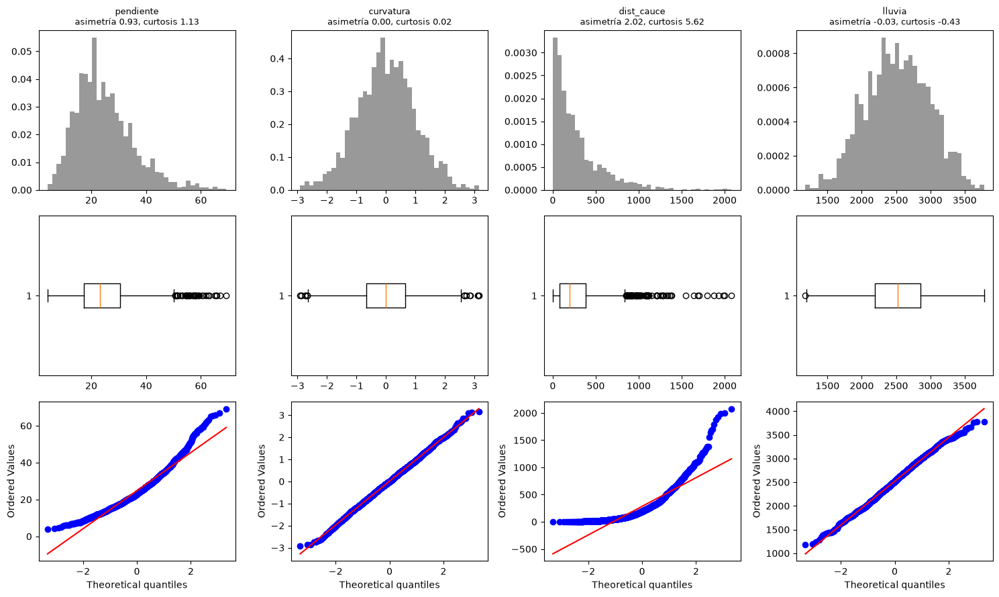
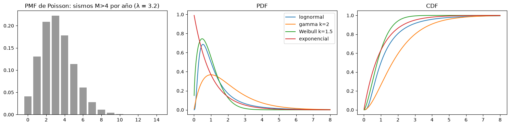
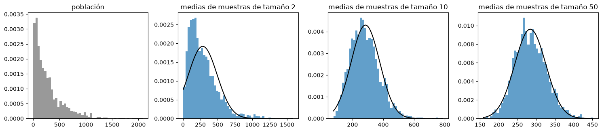
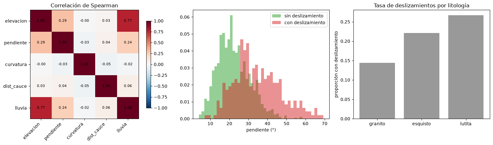

Análisis exploratorio de datos y distribuciones#
El análisis exploratorio de datos (EDA) es el primer paso antes de transformar los datos o construir un modelo. Consiste en resumir, visualizar y conocer a fondo las características del conjunto de datos para responder preguntas como: ¿qué tipo de datos son?, ¿son suficientes para el objetivo?, ¿hay valores faltantes o atípicos?, ¿cómo se distribuye cada variable?, ¿qué relaciones hay entre las variables y con la respuesta? [James et al., 2021, Kuhn and Johnson, 2013]
Este capítulo usa un inventario sintético de deslizamientos con seis variables y una respuesta binaria.
import numpy as np
import pandas as pd
import matplotlib.pyplot as plt
from scipy import stats
plt.rcParams['figure.dpi'] = 100
def inventario(n=1500, semilla=0):
r = np.random.default_rng(semilla)
elev = r.uniform(800, 3200, n)
pend = np.clip(r.gamma(4, 5, n) + 0.004 * (elev - 800), 0, 70)
curv = r.normal(0, 1, n) # negativa: cóncava
dist = r.exponential(300, n)
lluv = 1500 + 0.5 * elev + r.normal(0, 300, n)
lito = r.choice(['granito', 'esquisto', 'lutita'], n, p=[0.4, 0.35, 0.25])
efecto_lito = pd.Series(lito).map({'granito': 0.0, 'esquisto': 0.8, 'lutita': 1.2}).values
eta = -7 + 0.13 * pend - 0.5 * curv - 0.003 * dist + 0.0008 * lluv + efecto_lito
y = (r.random(n) < 1 / (1 + np.exp(-eta))).astype(int)
return pd.DataFrame({'elevacion': elev, 'pendiente': pend, 'curvatura': curv, 'dist_cauce': dist,
'lluvia': lluv, 'litologia': lito, 'deslizamiento': y})
df = inventario()
print(df.head().round(2))
print(df.describe().round(2))
print(df['litologia'].value_counts())
elevacion pendiente curvatura dist_cauce lluvia litologia \
0 2328.71 27.44 0.45 554.67 2585.02 granito
1 1447.49 18.93 -0.38 15.64 2341.58 lutita
2 898.34 16.30 -1.69 133.37 1822.78 esquisto
3 839.67 15.74 -1.81 261.33 1788.02 granito
4 2751.85 21.42 -0.97 64.19 3019.25 esquisto
deslizamiento
0 0
1 0
2 0
3 0
4 0
elevacion pendiente curvatura dist_cauce lluvia deslizamiento
count 1500.00 1500.00 1500.00 1500.00 1500.00 1500.0
mean 2020.59 24.80 0.01 284.18 2520.46 0.2
std 694.93 10.57 0.99 293.75 462.79 0.4
min 800.46 4.07 -2.91 0.10 1177.99 0.0
25% 1427.80 17.19 -0.66 75.14 2188.24 0.0
50% 2046.56 23.12 -0.02 192.86 2524.88 0.0
75% 2634.08 30.49 0.66 382.10 2858.36 0.0
max 3198.80 69.23 3.15 2079.04 3783.13 1.0
litologia
granito 589
esquisto 544
lutita 367
Name: count, dtype: int64
Análisis univariado#
El análisis univariado describe cada variable por separado. Las medidas de tendencia central (media, mediana, moda) y de dispersión (desviación estándar, rango intercuartílico) se complementan con la forma de la distribución: la asimetría y la curtosis. El histograma muestra la distribución de frecuencias; en un histograma de densidad el área de cada barra es la frecuencia relativa del intervalo y el área total es 1. El diagrama de caja resume los cuartiles y los atípicos, y el gráfico QQ compara los cuantiles de los datos con los de una distribución teórica, normalmente la normal: si los puntos se alejan de la recta, sobre todo en los extremos, el supuesto de normalidad no se cumple.
num = ['pendiente', 'curvatura', 'dist_cauce', 'lluvia']
fig, axs = plt.subplots(3, 4, figsize=(15, 9))
for j, v in enumerate(num):
x = df[v]
axs[0, j].hist(x, bins=40, density=True, color='0.6')
axs[0, j].set_title(f'{v}\nasimetría {stats.skew(x):.2f}, curtosis {stats.kurtosis(x):.2f}', fontsize=9)
axs[1, j].boxplot(x, orientation='horizontal')
stats.probplot(x, dist='norm', plot=axs[2, j]); axs[2, j].set_title('')
plt.tight_layout(); plt.show()

La distancia a los cauces es muy asimétrica, con una cola larga a la derecha, y su gráfico QQ se curva; la curvatura y la lluvia se acercan a la normal. Esto anticipa que la distancia se beneficiará de una transformación logarítmica.
Distribuciones de probabilidad#
Conocer la distribución de los datos ayuda a elegir el modelo. La función de masa de probabilidad (PMF) da la probabilidad de cada valor de una variable discreta; la función de densidad (PDF) cumple el mismo papel para variables continuas, de modo que la probabilidad es el área bajo la curva en un intervalo; y la función de distribución acumulada (CDF) da la probabilidad de que la variable sea menor o igual que un valor. Algunas distribuciones frecuentes en geociencias son la binomial (número de éxitos en \(n\) ensayos, como laderas que fallan entre \(n\) inspeccionadas), la de Poisson (número de eventos en un intervalo, como sismos por año), la exponencial (tiempo entre eventos), la normal, la lognormal (tamaños de grano, concentraciones, áreas de deslizamientos), la gamma y la de Weibull (lluvias, velocidades de viento, tiempos de falla).
fig, axs = plt.subplots(1, 3, figsize=(15, 3.8))
k = np.arange(0, 15)
axs[0].bar(k, stats.poisson.pmf(k, 3.2), color='0.6'); axs[0].set_title('PMF de Poisson: sismos M>4 por año (λ = 3.2)')
x = np.linspace(0.01, 8, 400)
for nom, dist in [('lognormal', stats.lognorm(0.8)), ('gamma k=2', stats.gamma(2)), ('Weibull k=1.5', stats.weibull_min(1.5)), ('exponencial', stats.expon())]:
axs[1].plot(x, dist.pdf(x), label=nom); axs[2].plot(x, dist.cdf(x), label=nom)
axs[1].set_title('PDF'); axs[2].set_title('CDF'); axs[1].legend()
plt.tight_layout(); plt.show()
print(f'P(al menos 6 sismos en un año) = {1 - stats.poisson.cdf(5, 3.2):.3f}')

P(al menos 6 sismos en un año) = 0.105
El teorema del límite central#
Aunque una variable no tenga distribución normal, la media de muestras suficientemente grandes y tomadas de forma independiente sí tiende a distribuirse normalmente, con media igual a la poblacional y desviación estándar \(\sigma/\sqrt{n}\). Este teorema es la base de los intervalos de confianza y de muchas pruebas estadísticas del capítulo siguiente. La celda siguiente lo comprueba con la distancia a los cauces, muy asimétrica.
pobl = df['dist_cauce'].values
rng = np.random.default_rng(5)
fig, axs = plt.subplots(1, 4, figsize=(15, 3.4))
axs[0].hist(pobl, bins=50, density=True, color='0.6'); axs[0].set_title('población')
for a, m in zip(axs[1:], [2, 10, 50]):
medias = rng.choice(pobl, (3000, m)).mean(axis=1)
a.hist(medias, bins=50, density=True, color='tab:blue', alpha=0.7)
xx = np.linspace(medias.min(), medias.max(), 200)
a.plot(xx, stats.norm.pdf(xx, pobl.mean(), pobl.std() / np.sqrt(m)), 'k')
a.set_title(f'medias de muestras de tamaño {m}')
plt.tight_layout(); plt.show()

Análisis bivariado y correlación#
El análisis bivariado estudia las relaciones entre pares de variables y entre cada variable y la respuesta. La covarianza mide qué tanto varían juntas dos variables, pero depende de sus unidades. El coeficiente de correlación de Pearson la normaliza entre -1 y 1 y mide la asociación lineal; el de Spearman, que trabaja con los rangos, mide la asociación monótona y es menos sensible a los atípicos. Una correlación alta entre dos predictores anticipa problemas de multicolinealidad en los modelos lineales (capítulo Regresión lineal y regularización). Recuerde que la correlación mide asociación, no causalidad.
Para una respuesta binaria, la comparación más útil es la de las distribuciones de cada predictor en los dos grupos, con y sin deslizamiento.
num_all = ['elevacion', 'pendiente', 'curvatura', 'dist_cauce', 'lluvia']
fig, axs = plt.subplots(1, 3, figsize=(16, 4.5), gridspec_kw={'width_ratios': [1.1, 1, 1]})
corr = df[num_all].corr(method='spearman')
h = axs[0].imshow(corr, cmap='RdBu_r', vmin=-1, vmax=1)
axs[0].set_xticks(range(5)); axs[0].set_xticklabels(num_all, rotation=45, ha='right'); axs[0].set_yticks(range(5)); axs[0].set_yticklabels(num_all)
for i in range(5):
for j in range(5):
axs[0].text(j, i, f'{corr.iloc[i, j]:.2f}', ha='center', va='center', fontsize=8)
axs[0].set_title('Correlación de Spearman'); fig.colorbar(h, ax=axs[0], shrink=0.8)
for g, col in [(0, 'tab:green'), (1, 'tab:red')]:
axs[1].hist(df.loc[df.deslizamiento == g, 'pendiente'], bins=40, density=True, alpha=0.5, color=col, label=['sin deslizamiento', 'con deslizamiento'][g])
axs[1].set_xlabel('pendiente (°)'); axs[1].legend()
tasa = df.groupby('litologia')['deslizamiento'].mean().sort_values()
axs[2].bar(tasa.index, tasa.values, color='0.6'); axs[2].set_ylabel('proporción con deslizamiento'); axs[2].set_title('Tasa de deslizamientos por litología')
plt.tight_layout(); plt.show()

La elevación, la pendiente y la lluvia están correlacionadas entre sí, como en el ejemplo de confusión del capítulo 1. Los deslizamientos ocurren en pendientes mayores, y las lutitas y los esquistos tienen tasas más altas que el granito. Todo esto orienta la selección de variables y la elección del modelo.
Para profundizar#
El capítulo 2 de [Wasserman, 2004] resume las distribuciones de probabilidad, y el capítulo 3 de [Kuhn and Johnson, 2013] trata la exploración y la transformación de predictores. Los notebooks 05 del curso (EDA y estadística) amplían estos temas con datos reales.